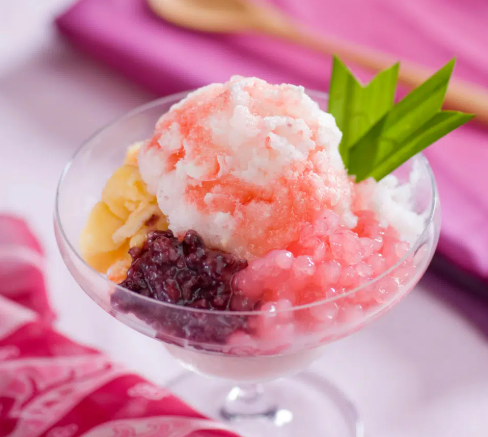

| Main Dish |
#1 |
Rendang |

|
Very delicious dish to be enjoy with the warm rice, most of the time Rendang is for Lunch, but can also be served for Dinner or Breakfast. |
| #2 |
Satay |
|
Usually people eat Satay for dinner. Can be served with rice cake or with rice. |
| #3 |
Nasi Goreng |

|
Common Dish for Breakfast, Lunch or even Dinner time. Spicy test better. |
| Dessert |
#1 |
Martabak Manis |

|
Dessert to be enjoy at any time, can be serve either warm or cold. |
| #2 |
Es Doger |

|
The best dessert during summer time. |
| #3 |
Klepon |
|
The best time to eat this is when it's still warm, because the brown sugar inside melting. |